In Toyama gibt es nichts zu sehen. Daher sind wir nach Takayama gefahren. Der kleine Ort ist berühmt für ein paar schöne alte Straßen mit traditionellen Häusern und Sakehändlern. Wir haben unsere Rucksäcke in ein Schließfach gepresst und sind ein paar Stunden durch die Altstadt gebummelt. Es war sehr auf Touristen abgestimmt und überlaufener als erwartet. Man kann lokale Spezialitäten wie Softeis mit Sake-, Süßkartoffel- oder Maronengeschmack kosten oder häßlichen Krimskrams kaufen.
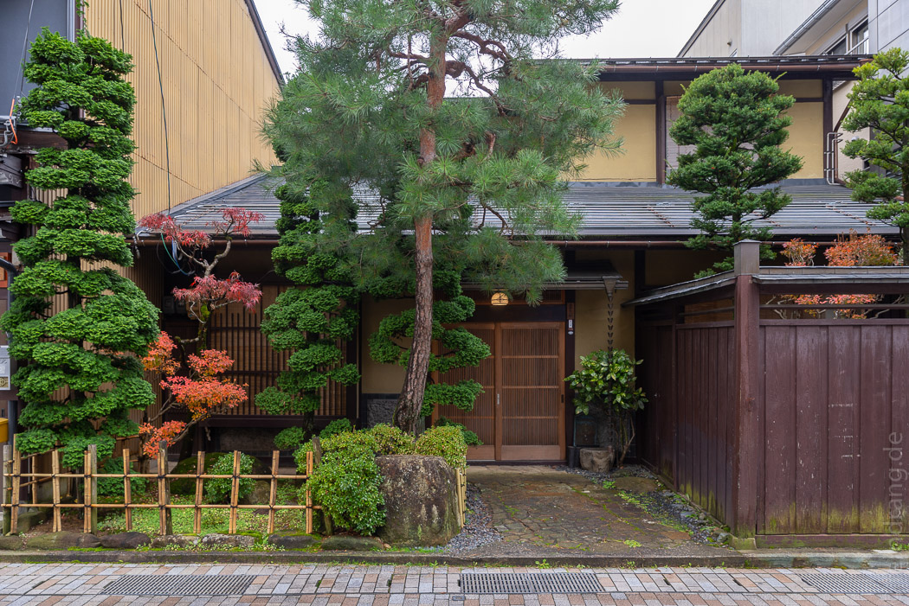 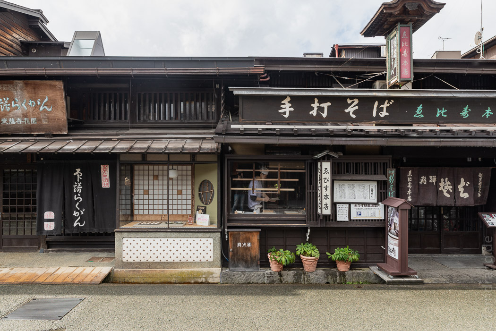 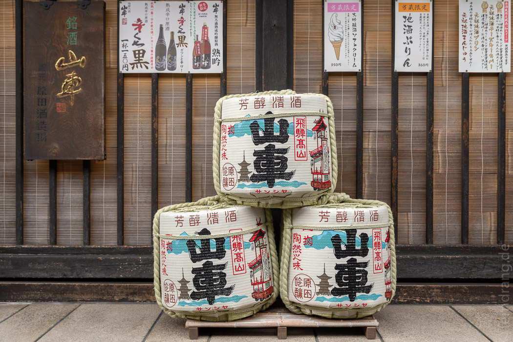Fukuji Onsen
Der Erholungseffekt der Reise ließ bisher etwas zu wünschen übrig. Daher sind wir mittags wieder in ein kleines Onsen-Kaff in den Bergen gefahren, wo wir uns einen Tag im Ryokan Yamoto Chouza gegönnt haben. Der Ryokan ist etwas rustikaler, denn vor 70 Jahren war das noch ein Bauernhaus. In der Zwischenzeit ist aber ordentlich aufgemöbelt worden. Wir hatten von unserem geräumigen Tatami-Zimmer einen schönen Blick auf die bemoosten Gänge, die das Haus mit seinem wichtigsten Feature, den Onsen-Bädern verbinden. 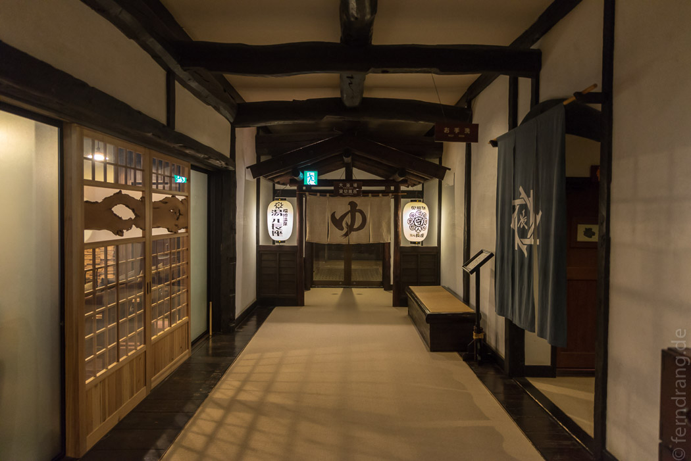
Zwischen schönen moosig-wilden Gärten mit Koi-Teichen und roten Ahornbäumen sprudelt das heiße Wasser. Kaum hatten wir die Ryokan-Kluft mit Zehensocken und Hauskimono angezogen, haben wir uns ihrer im Onsen auch wieder entledigt. Im außen liegenden Bad hat die eiskalte Luft das Wasser erträglicher gemacht und wir konnten den Blick auf die waldigen Berge genießen.
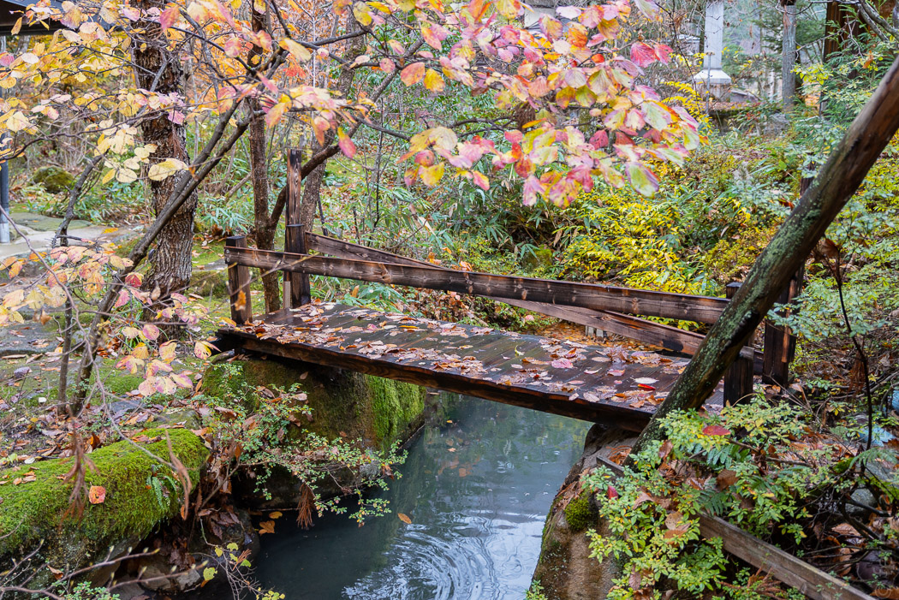 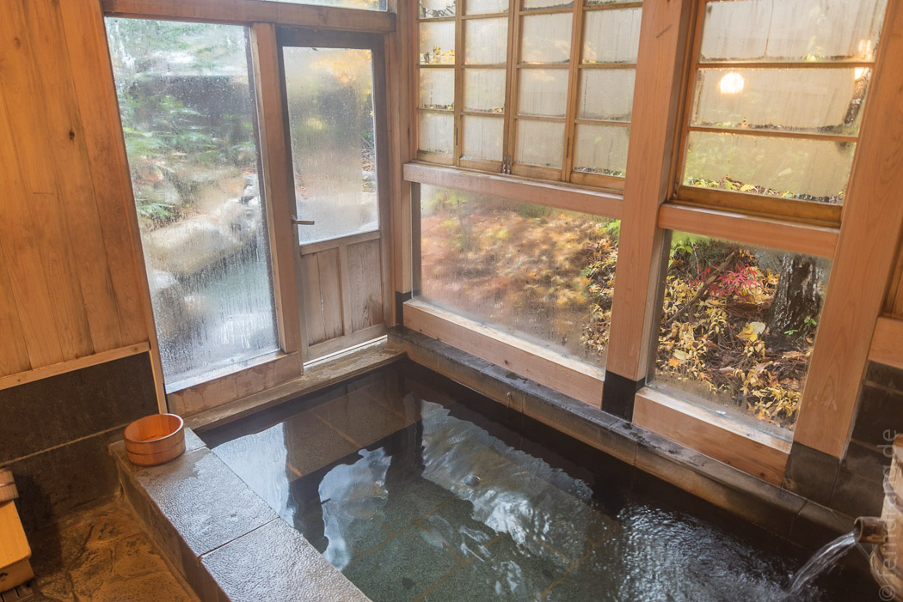Das Abendessen war vielleicht sogar noch opulenter als beim letzten Mal. Die Kellnerin hat immer weitere Köstlichkeiten geliefert. Der junge Japaner uns gegenüber hat sich mit jedem Gang etwas weiter auf die Tatamis gelegt, bis er unter Stöhnen zum Nachtisch gekommen ist. Wir haben es nur knapp länger ausgehalten und bald darauf dick und rund in den gemütlichen Futon-Betten gelegen.
 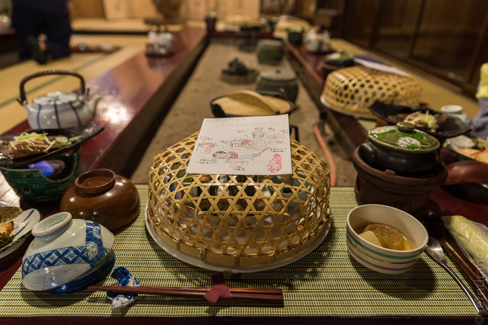
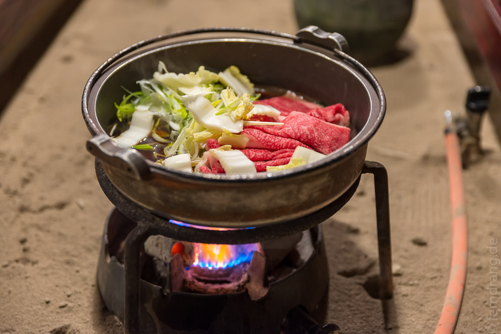
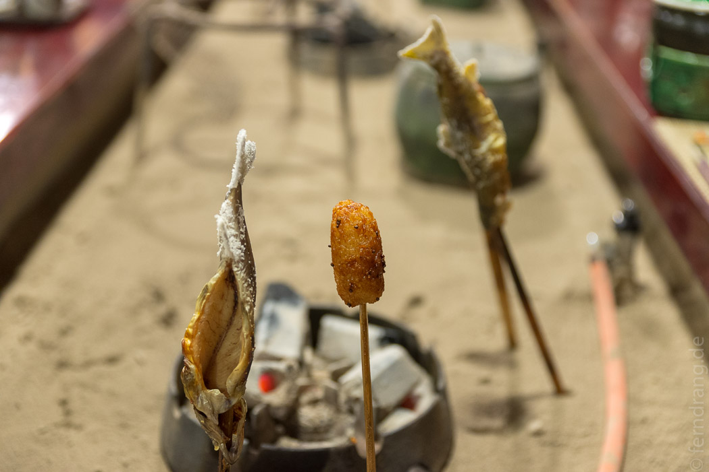
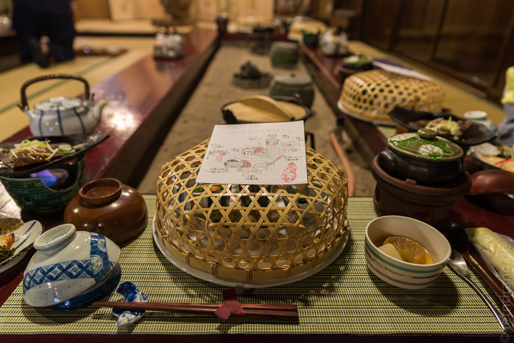
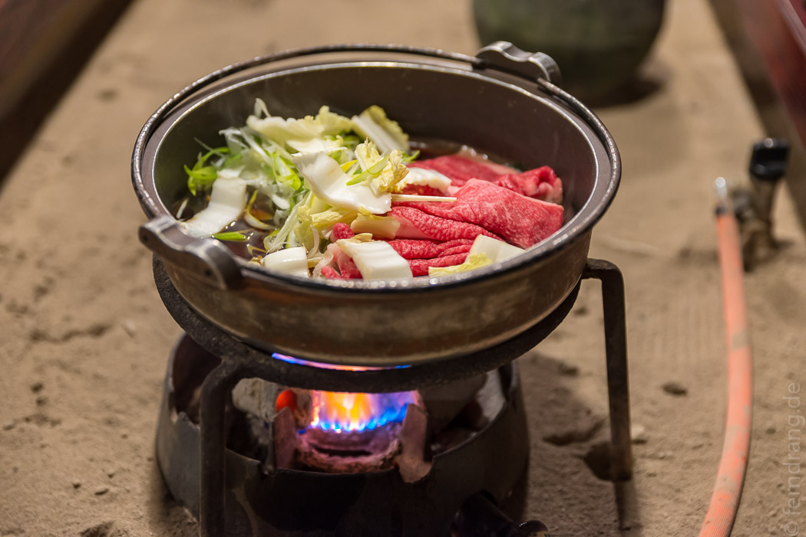
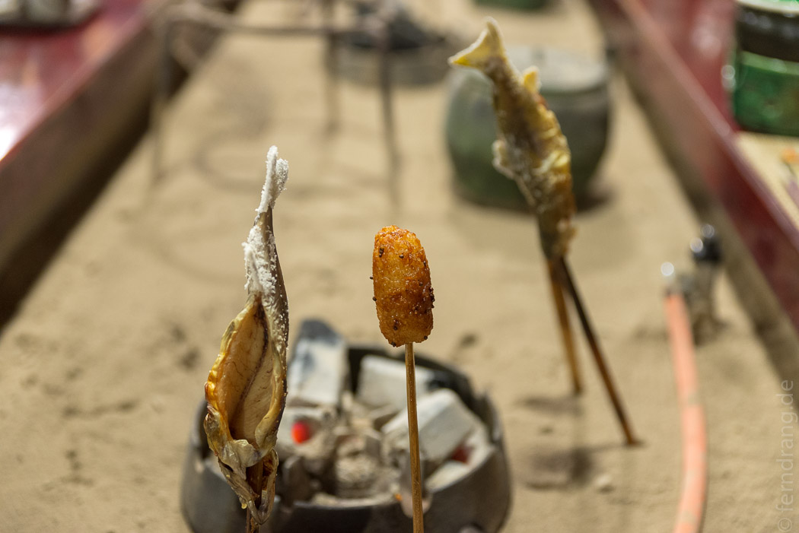